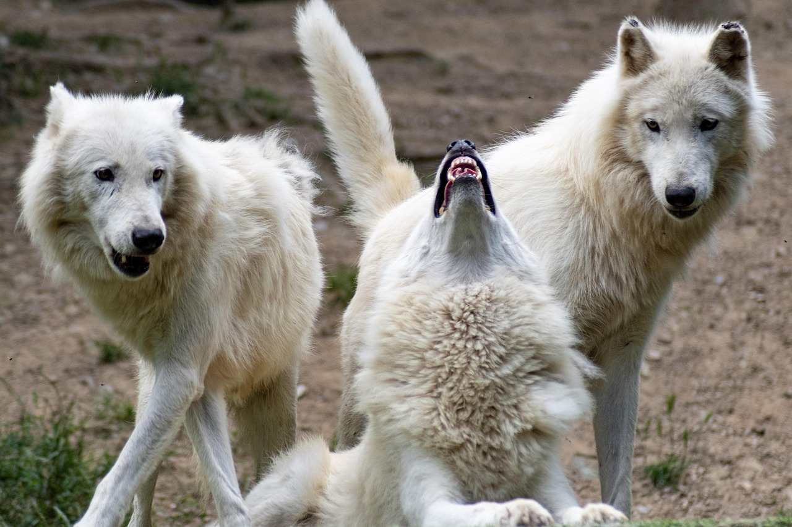

Protection and Parks
Here you can find information about the protection of wolves and their habitats, as well as national parks that are dedicated to their protection.

Protection against wolves
Protection against wolves will vary from first being protected against wolves from your livestock or others like yourself. The other would be how the wolves are protected so that they can survive. To protect your livestock, different ways will be to start with a guardian dog which is used to protect livestock from being eaten. The other option is the fencing which for wolves doesn't work much since they can jump 12 feet in the air. The fencing can be electric or fladry to scare the wolves. Noise and light devices can be used like airhorns, loud noises, or light devices from strobe lights to a very bright light. An intelligent way would be using technology that can detect the wolves where they are and or have rubber bullets fire off the wolves or just a noise device directed at them. Next, would be how the wolves are protected from everything except wildlife. The wolves are protected from the Endangered Species Act however not fully everywhere since this act varies from our president Trump and former president Joe Biden. The ESA provides protection for wolves in many areas, making it illegal to harm them and supporting recovery efforts. State and local laws which can include specific regulations on hunting or trapping. Another way is population monitoring using techniques like GPS collars to track and survey them and their pack. Habitat protection like Yellowstone which is illegal to hunt or kill any wildlife at Yellowstone. Specific human wildlife will monitor the wolves and activities to study and learn about them; therefore, they are protected in some way. Lastly, captive breeding programs and organizations breed endangered wolves for potential reintroduction into the wild.
Parks that have wolves and can help out!
What you can do to help wolves
There are many different ways to help wolves and wildlife endangerment. Wolves can be helped by donating to the providers that are helping the wolves out like the Apex Protection Project listed in Parks that have wolves and can help out section. Another way is to spread the word and support wolves in endangered species act so that the wolves can be protected instead of endangered! You could also meet a wolf yourself and take pictures or walk with them in many different conservation centers that are made for wolves! A final thing is to protect the environment from every animal like trash or livestock depending on where you live.